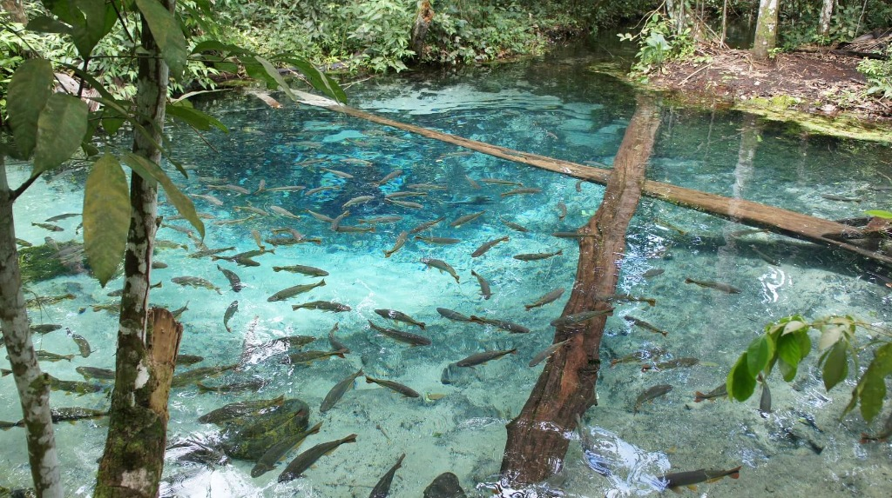
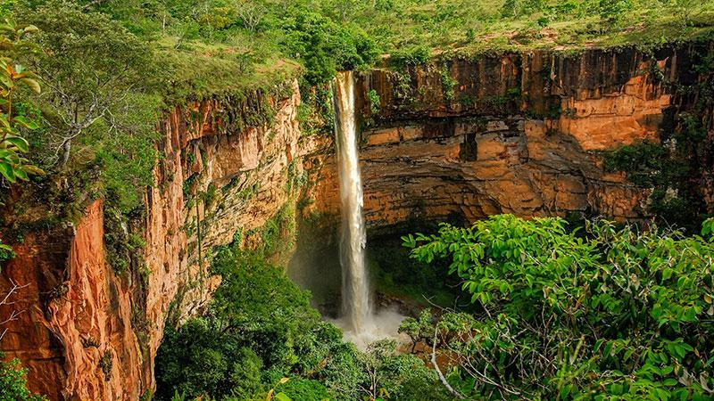
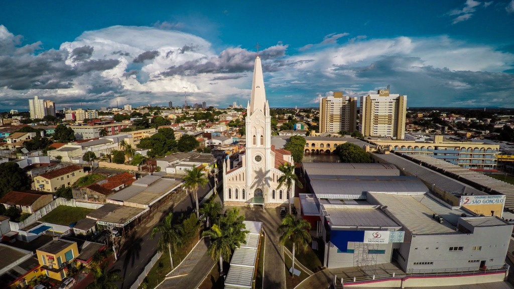
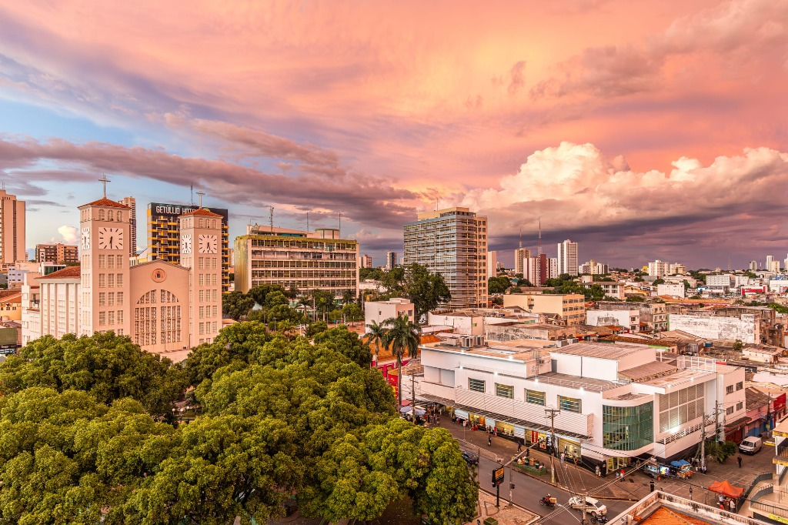
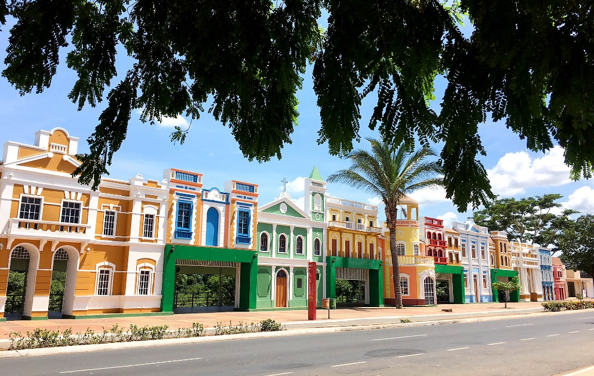
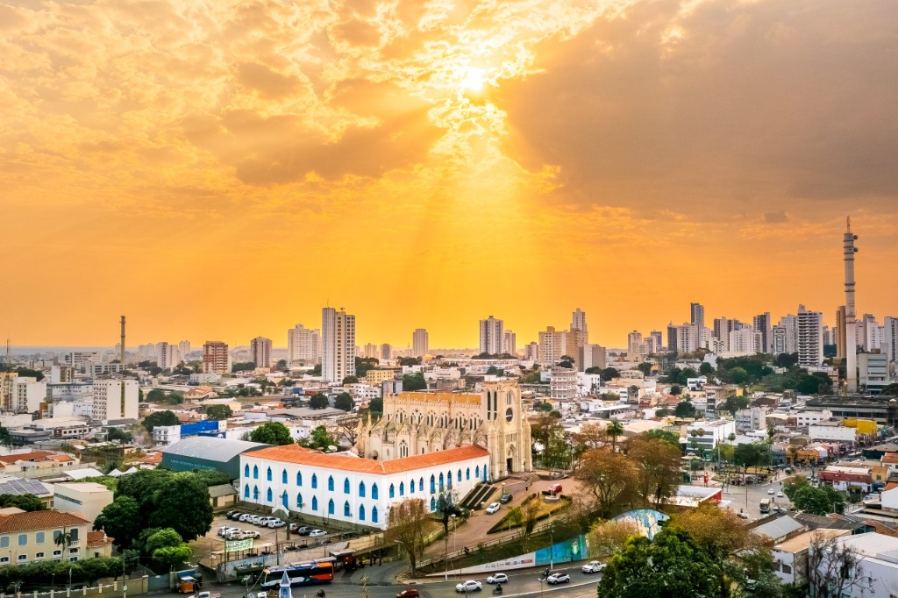
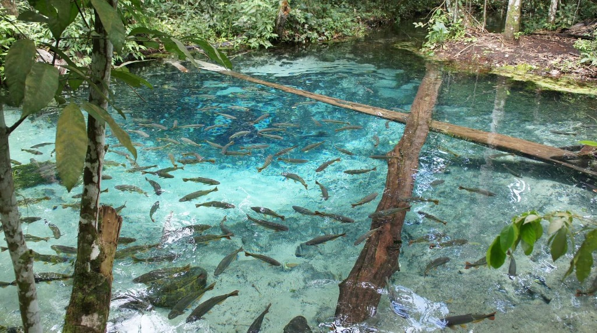
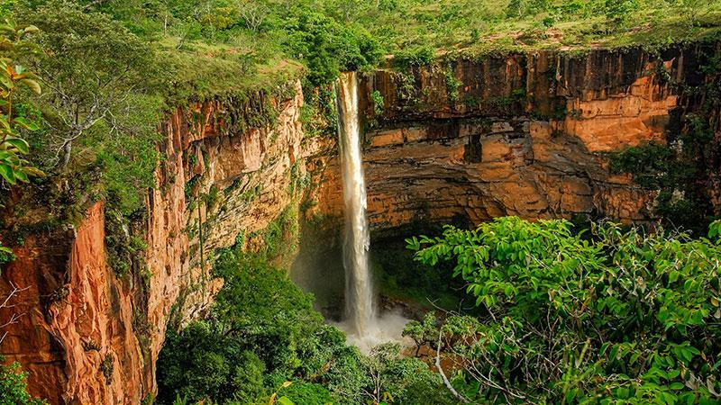
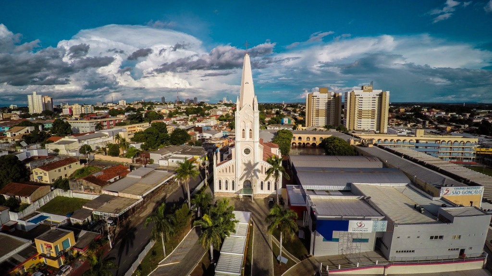
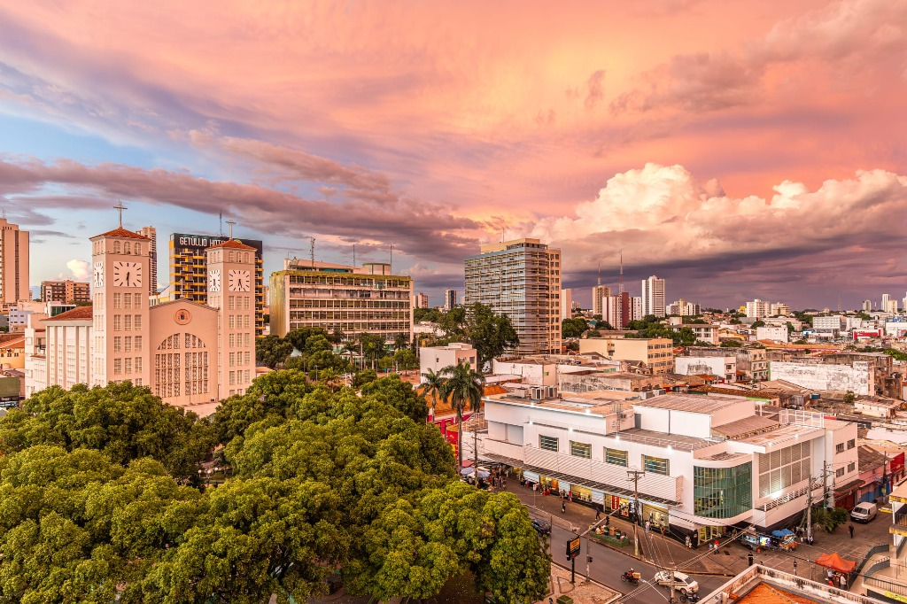
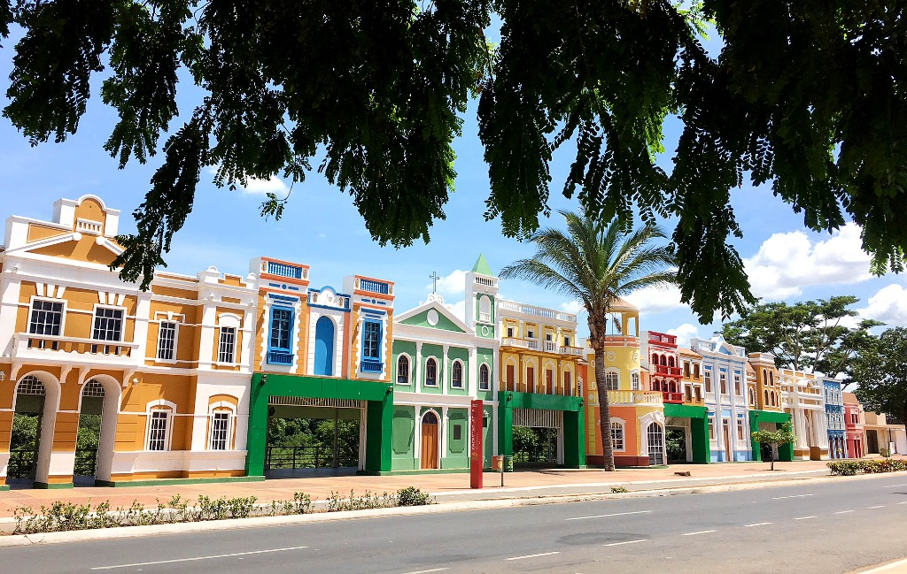
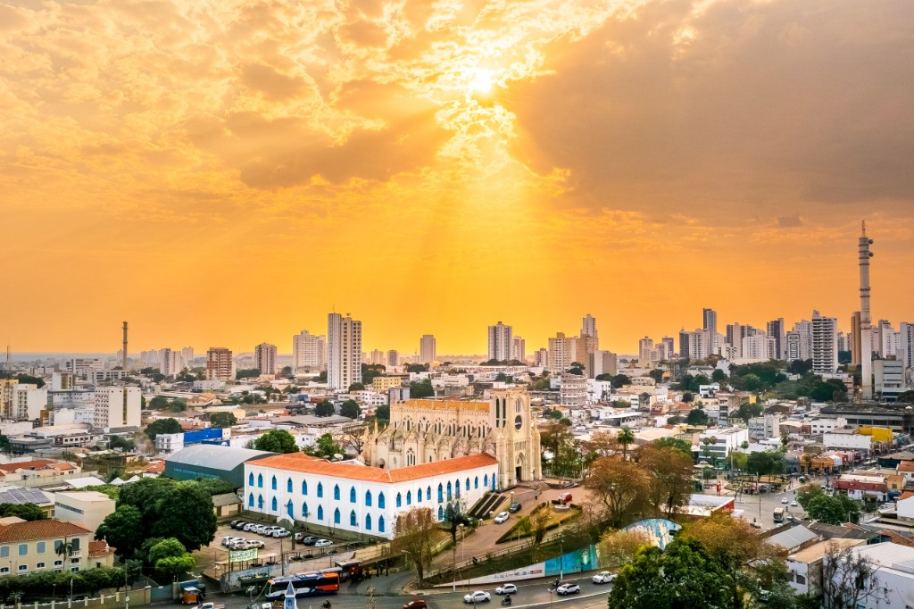
Venha conhecer Cuiabá Mato Grosso
Descubra uma região onde a modernidade de Cuiabá se encontra com a exuberância natural de Mato Grosso. Um destino surpreendente que combina clima tropical, infraestrutura para grandes eventos e uma hospitalidade incomparável.
Aproveite também para estender sua visita e vivenciar destinos internacionalmente cobiçados, como as belezas místicas da Chapada dos Guimarães e os safáris inesquecíveis no majestoso Pantanal.
Conhecer Mais